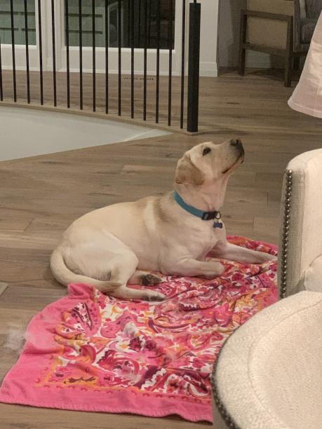
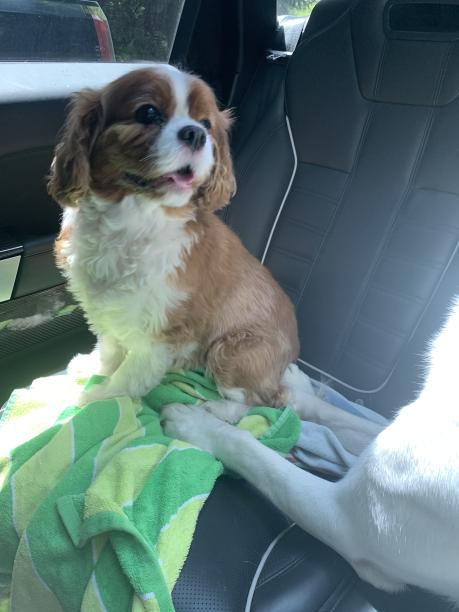

Hello! My name is Kalea, and today I will be giving you a short and informal introduction to my two dogs!

This is Apollo, my golden labrador retriever. He was adopted into our family on January 23rd, 2021, and is currently 3 years old. Originally, Apollo was known as Merlin, and was brought up and raised to be an eye-seeing dog for the Seeing Eye Dog Society of Jackson, Michigan. Unfortunately, he had to be let go as he was too excitable and fast to properly guide a blind person. However, throughout the process of training to be an eye-seeing dog, Apollo underwent many disciplinary exercises, making him much better behaved than most dogs initially put up for adoption. However, this also made him very sought after by other families looking to adopt a new and friendly dog. It was only thanks to good timing, a stroke of luck, and maybe a slight bit of persuasion that Apollo was able to come home to our family.
Currently, Apollo remains a very energetic (yet well-behaved) puppy who recently became fully grown. His hobbies include playing fetch, swimming in the lake, rolling over (onto your lap, if you’re lucky), and randomly trying to get you to hold his paw. He is a very playful yet gentle dog, especially when interacting with smaller dogs, which made him a good fit for us.

This is my other dog, Bodie, a Cavalier King Charles Spaniel. He was adopted into our family as of December 4th, 2012, and is currently 9 years old. Despite his puppy-like appearance and face, Bodie is indeed quite old, and is, by all means, the more lax and laid back of our dogs. Unlike Apollo, Bodie is allowed on all of our household furniture, a tidbit of information that he takes great pride in and often playfully flaunts to Apollo. Being a smaller-sized dog also allows Bodie to fit snugly into the laps of both family and company alike, a fact which, knowing Bodie, is also held over Apollo’s head (quite literally, since Apollo is not allowed to hop up into either laps nor furniture). Despite Bodie’s old man smugness and Apollo’s youthful playfulness, the two often interact quite well together, as Bodie is willing to give Apollo attention and Apollo is willing to play gently with Bodie. This kind of well-functioning dynamic is what makes Bodie and Apollo such good brothers, as well as such good fits into our home.
Bodie himself is a very laid-back dog, but his hobbies include napping, snuggling, chasing laser pointers (like a cat would), and eating.
| Date | Milestone | third |
|---|---|---|
| 1965 | First prototype at MIT | 1 |
| 1968 | ACG tested at NASA | 2 |
| 1968 | ACG tested at NASA | 3 |